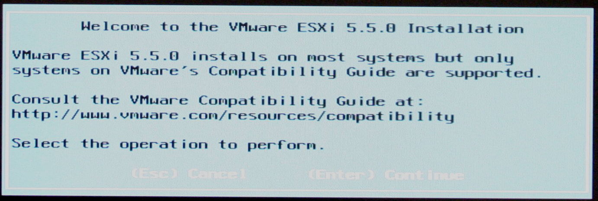
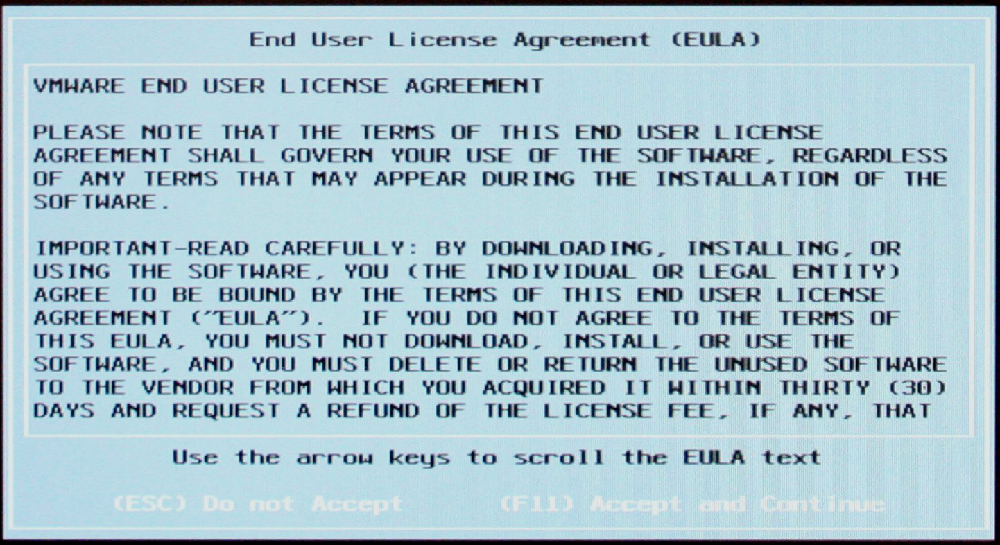
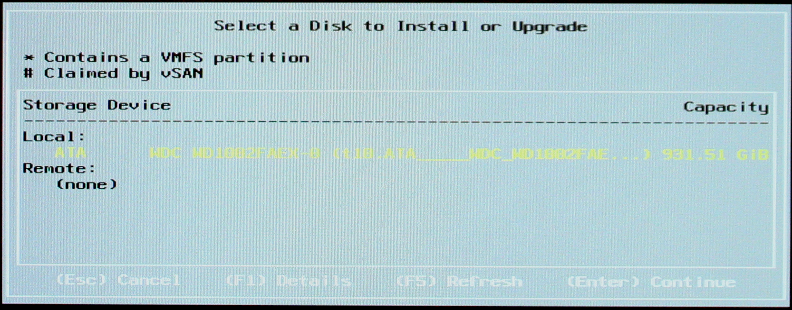
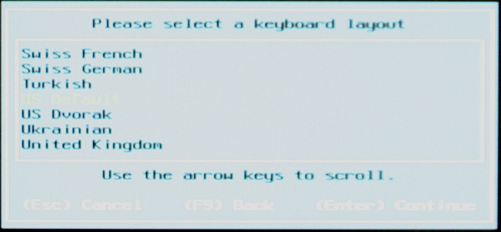
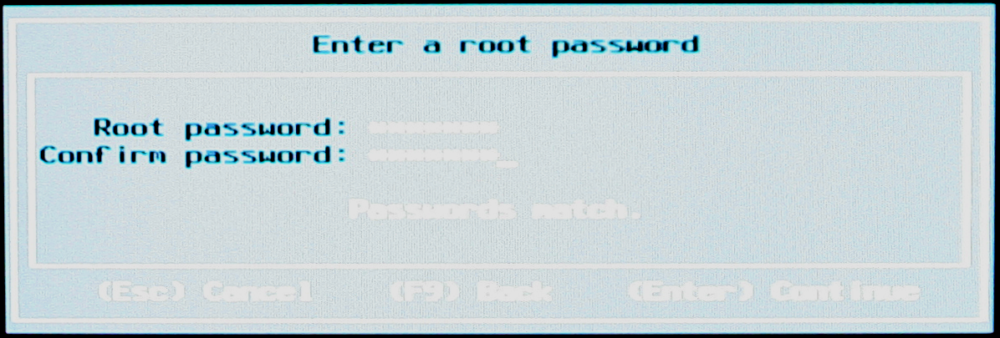
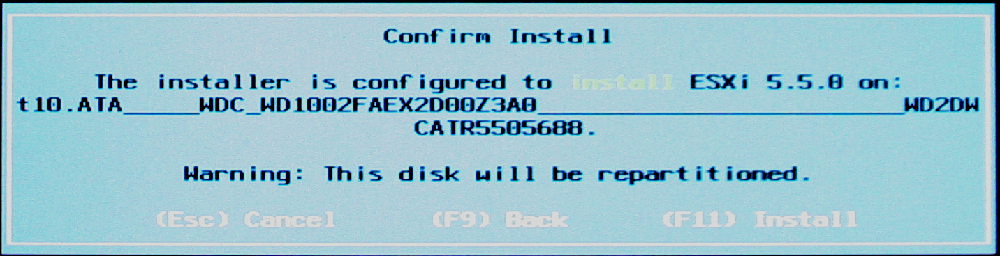
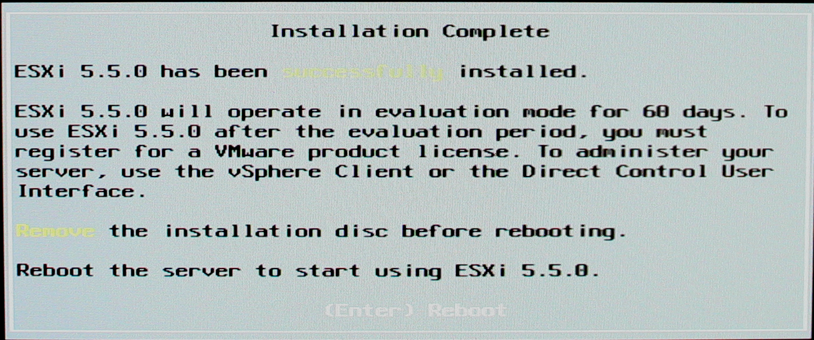

ESXi Install
After downloading the ESXi ISO image and burning it to a CD, use the CD to boot the server into the ESXi installer (note: it is easier to install ESXi onto a blank hard drive). After the ESXi installer boots you will be presented with the welcome screen.

Figure 1: ESXi Installer Welcome Screen
Press enter to continue. Next you will be presented with the License Agreement for ESXi. Press the F11 key to accept the license and continue.

Figure 2: ESXi License Agreement
Next, the ESXi installer will ask you where to install ESXi. Select the desired hard drive (if your server has more than one) and then click enter to continue.

Figure 3: ESXi Install Location
Next, the ESXi installer will ask you for your keyboard layout language. Select the language appropriate for your keyboard and press enter.

Figure 4: Keyboard Language
Next, the ESXi installer will ask you to create a root password. Enter a root password and remember it. You will need it later to continue installing ISEAGE.

Figure 5: ESXi Root Password
After setting the root password, the ESXi installer will ask for conformation for install ESXi. Press the F11 key to start installing ESXi.

Figure 6: Confirm Installation
ESXi will now install itself on your server. After the installation completes you will be presented with a screen similar to Figure 7 . Press enter to reboot your server.

Figure 7: Installation Complete
After rebooting your server, ESXi should start. After ESXi finishes loading, you should be presented with a screen similar to Figure 8 . ESXi is configured to get an IP address by DHCP by default. If you need to set up a static IP address follow in the instructions in 1b. Setting a static IP Address on ESXi. Otherwise, click here to continue installing ISEAGE.

Figure 8: ESXi Main Screen